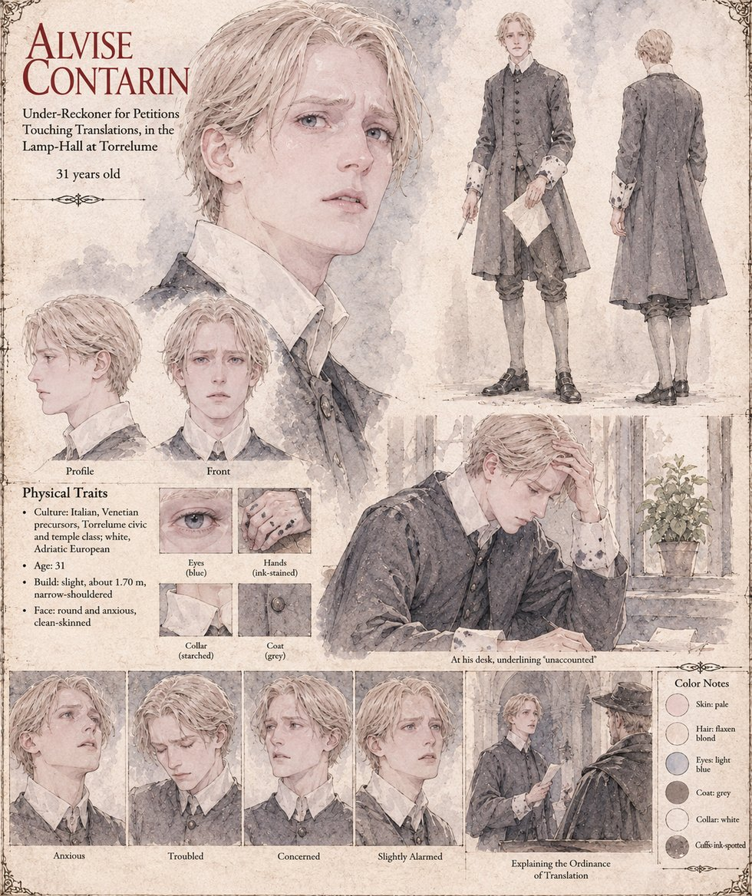

Alvise Contarin
Under-Reckoner for Petitions Touching Translations, in the Lamp-Hall at Torrelume · drafter of four of the form’s eleven pages · 31
He is a neat, fair, anxious man with ink to the second knuckle and a collar starched by a mother who did not trust the laundry, thirty-one, under-Reckoner for Petitions Touching Translations, who sits beside a pot of basil on the sill of the Lamp-Hall’s anteroom with the quiet of the permanently overlooked. He spent the better part of the winter drafting four of the eleven pages of the form that moved Focolare, and was told in the last week of Averin that the Legates would conduct the removal themselves; he watched forty-one hulls and a flame depart from the window, with the tender, proprietary grief of a man watching his own handwriting leave on a boat.
On the evening the Ring is closed, a foreigner called Higa in the Hall’s day-book, unlit and bowing, with two swords tied shut in knots of peace, is referred up the line as far as it goes, to Alvise. He asks whether the Order has ever entered, in any book, a man who had come out of a stone. Alvise says kindly that it has not: the Order keeps two columns, the lit and the unlit, and beneath them a third heading for whatever falls between, unaccounted for. A man out of a stone would go there, and it is not a judgment. Asked what a boatman’s word, translation, carried, he has the happiest ten minutes of Alvise Contarin’s winter explaining the Ordinance, the valley on the Talvena that the surveyors entered as Val Muta, and the margin’s single word that it does not answer. The foreigner says “I know the kind.” Alvise does not know what he means, writes it down anyway, and watches the day-book write referred. When he looks at his notes he has underlined unaccounted without having meant to.
The manuscript gives his age (thirty-one), his neatness, fairness, anxiety, ink and collar, and no height, build or eye colour. The sheet’s slight, narrow-shouldered build of about 1.70 m, round clean-skinned face, flaxen hair, blue eyes, grey buttoned coat and ink-spotted cuffs are its own, as are its panels Anxious, Troubled, Concerned and Slightly Alarmed. Its scenes At his desk, underlining ‘unaccounted’ and Explaining the Ordinance of Translation follow the manuscript; the second draws the foreigner from behind in a wide-brimmed hat and dark cloak, where the manuscript gives him a brown tunic mended at the elbows. The potted plant on the sill is the manuscript’s basil.
“a neat, fair, anxious man with ink to the second knuckle and a collar starched by a mother who did not trust the laundry”